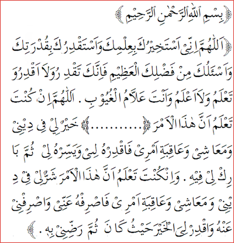

Shalat istikharah adalah shalat sunnah yang dikerjakan ketika seseorang hendak memohon petunjuk kepada Allah, untuk menentukan keputusan yang benar ketika dihadapkan kepada beberapa pilihan keputusan. Sebelum datangnya Islam, masyarakat jahiliyah melakukan istikharah (menentukan pilihan) dengan azlam (undian). Setelah Islam datang, Allah melarang cara semacam ini dan diganti dengan shalat istikharah.
Lafadz atau Bacaan Niat Shalat istigharoh
USHOLLII SUNNATAL ISTIKHAARATI RAK'ATAINI LILLAAHI TA'AALA
Artinya :
Saya berniat shalat sunnat Istikharah dua rakaat karena Allah Ta’ala
Doa setelah sholat istikhoroh :

"Allaahumma innii astajhiruka bi'imika wa astaqdiruka biqudratika, wa as'aluka mingfadhlikal azhiimi, fainnakataqdiru walaa aqdiru, wata'lamu walaa a'lamu, wan angta al laamulghuyuubi allaahumma ingkungta talamu annahaadzalamra *( Disini dari titik titik bacaan di atas silahkan sebutkan perkara masing-masing )* khairullii fiidiinii wama'aasyii wa'aaqibati amrii, faqdirhulii wayassirhu liitsumma baariklii fiihi, wa'ingkungta ta lamu anna haadazal amra syarrulli fii fidiinii wa ma'aasyii wa'aaqibati amrii, fashrifhu'annii washrifnii anhu waqdir liyal khaira haitsu kaana tsumma radhdhinii bihi".
Arinya :
"Wahai allah, sesungguhnya aku memohon kepada engkau memilih yang baik untukku dengan ilmu engkau, aku memohon kepada engkau untuk menentukannya dengan kekuasaan engkau, dan aku memohon kepada engkau anugerah engkau yang agung, karena sesungguhnya engkau mampu memberi ketentuan sedangkan aku tidak, engkau dapat mengetahuinya, sedangkan aku tidak, dan engkaulah yang maha mengetahui hal-hal yang ghaib, wahai allah jika engkau tahu bahwa perkara ini *(SILAHKAN SEBUTKAN PERKARA MASING-MASING)* baik bagiku, didalam agamaku, kehidupanku, dan akibatnya, maka tetapkanlah perkara itu untukku dan mudahkanlah itu bagiku kemudian berilah aku keberkahan didalamnya, dan jika engkau tau bahwa perkara ini jelek bagiku, didalam agamaku, kehidupanku, dan akibatnya, maka jauhkanlah pekara itu dariku dan jauhkanlah aku darinya dan tetapkanlah untukku kebaikan dimanapun adanya, kemudian jadikanlah aku rela kepadanya".
Keutamaan dan Keistimewaan Shalat Istikharah
Shalat sunnah Istikharah memiliki banyak keutamaan dan keistimewaan yang manfaat dari shalat sunnah Istikharah seperti dalam Sabda Nabi Muhammad Saw yang berbunyi: "Jika salah seorang diantara kalian berniat dalam suatu urusan maka lakukanlah Shalat Sunah dua raka'at yang bukan shalat wajib, kemudian berdoalah meminta kepada Allah (HR. Al-Bukhari).
Memohon pilihan yang terbaik kepada Nya merupakan cara sebagaimana yang telah diajarkan Rasulullah bagi ummatnya, sehingga dapat menemukan pilihan yang sesuai dengan keinginan sehingga membawa dampak dalam kehidupan. Allah berfirman: "Wasta'ilnu bis shobri was sholah" (minta tolonglah kepada Allah dengan sabar dan shalat). Berikut manfaat shalat Istikharah/keutamaan dan keistimewaan shalat Istikharah.
Menghilangkan keraguan dalam menentukan pilihan
Menemukan pilihan yang terbaik sesuai dengan keinginan dari petunjuknya
Terhindar dari kesalahan-kesalahan yang menentukan pilihan
Memantapkan hati setiap mengambil keputusan